2
Um pequeno barco consegue, com sua propulsão, manter uma velocidade constante de 4 m/s em relação às águas, que é a mesma velocidade com que uma pessoa se desloca em uma corrida suave em movimento uniforme. O barco e a pessoa iniciam simultaneamente, e de um mesmo ponto, a travessia de um rio com 80 m de largura. A pessoa se desloca por uma ponte transversal às margens, enquanto o barco se desloca nas águas do rio, sempre com seu eixo paralelo à direção dessa ponte. O movimento do barco é afetado por uma correnteza de 7,5 m/s.
- Qual é a distância entre a pessoa e o barco, e entre o barco e o ponto de partida, 2 s depois de iniciada a travessia?
- Qual é a distância entre o barco e a pessoa ao terminarem a travessia?
- Esquematize a trajetória de cada um dos móveis em relação às margens e determine o deslocamento sofrido pelo barco em relação às margens.
Resolução
-
A pessoa se desloca pela ponte, que é fixa em relação às margens. O deslocamento da pessoa em 2 s pode ser obtido por: Δs=v • Δt; logo,Δs=4 • 2 ⇒ Δs=8 m.
Em relação às águas, o barco tem o mesmo deslocamento que a pessoa. Esse deslocamento, para um observador fixo nas margens, é o deslocamento relativo; logo,  . Entretanto, o barco é simultaneamente arrastado pela correnteza, em uma direção perpendicular à direção do eixo da ponte. O módulo do deslocamento de arrastamento é
. Entretanto, o barco é simultaneamente arrastado pela correnteza, em uma direção perpendicular à direção do eixo da ponte. O módulo do deslocamento de arrastamento é  .
.
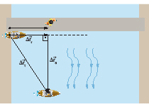
A figura anterior ilustra as posições ocupadas pelos corpos 2 s após o início da travessia.
Aplicando-se o teorema de Pitágoras no triângulo determinado pelos vetores, temos:

A distância entre a pessoa e o barco nesse instante é de 15 m. A distância entre o barco e seu ponto de partida é de 17 m.
-
Ambos terminam a travessia simultaneamente. O deslocamento sofrido pela pessoa, em um referencial fixo na margem, possui módulo de 80 m, que é o comprimento da ponte. Esse também é o módulo do deslocamento relativo do barco.
Para obter o módulo do arrastamento, vamos primeiro determinar o tempo de travessia:

Assim, temos:

Então, a distância entre o barco e a pessoa ao terminarem a travessia é de 150 m.
-
A figura ilustra o barco e a pessoa ao terminarem a passagem pelo rio.

Aplicando-se o teorema de Pitágoras no triângulo retângulo formado pelos vetores, temos:

Essa é a distância do barco em relação a seu ponto de partida.
Relação entre as velocidades
Tomando a relação entre os deslocamentos e dividindo por um intervalo de tempo qualquer (Δt), obtemos:

Se o intervalo de tempo tender a zero, então as razões que representam cada parcela da igualdade são as respectivas velocidades instantâneas, assim:

A velocidade total é a soma vetorial da velocidade relativa com a velocidade de arrastamento.
A dúvida mais comum que surge na resolução dos exercícios de composição de movimentos se configura em estabelecer qual é, no problema, cada uma das velocidades. Qual é a relativa? Qual é a de arrastamento? Ou, ainda, qual é a total?
Essas perguntas são respondidas se, antes de serem formuladas, identificamos claramente onde está o observador. O movimento que se processa em relação ao referencial no qual o observador está fixo é o total; o movimento que se processa no referencial que se move em relação ao observador é o movimento relativo; e o movimento do referencial móvel em relação ao observador é o movimento de arrastamento.
A relação entre as velocidades também pode ser expressa pela regra da cadeia:

3
Em um dia chuvoso, um motorista observa que as gotas de chuva determinam trajetórias verticais nas janelas do veículo, quando este está parado em relação à estrada. Acelerando o carro para a frente, o motorista verifica que as trajetórias ficam inclinadas 30o em relação à vertical nas janelas laterais, no instante em que o velocímetro indica 72 km/h. Determine a velocidade da chuva em relação ao solo.
Resolução
Para um observador fixo às margens da rodovia, temos:
- é a velocidade da chuva em relação ao solo (total);
- é a velocidade do automóvel em relação ao solo (arrastamento);
- é a velocidade da chuva em relação ao carro (relativa).
Podemos ilustrar um diagrama vetorial do problema, em que , de acordo com a figura a seguir.
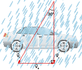
Notamos que va=72 km/h=20 m/s.
De acordo com o triângulo retângulo formado pelos três vetores, temos:
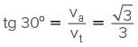 ⇒ 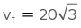; logo, vt=34,6 m/s.
O esquema de composição das velocidades é:
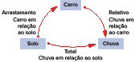
Movimentos em uma única direção
Se todos os deslocamentos acontecem em uma única direção, podemos utilizar as projeções (módulos) dos vetores – grandezas escalares –, adotando o critério já visto de eleger uma orientação. Os vetores cujas componentes possuem o mesmo sentido que a orientação escolhida têm projeção positiva e, em caso contrário, têm projeção negativa. Reduzimos, assim, uma questão vetorial a uma questão simplesmente algébrica, conforme os exemplos a seguir.
4
A velocidade de um barco em relação às águas de um rio é de 54 km/h (15 m/s), e a velocidade das águas em relação à margem é de 5,0 m/s. Considere que se trata de movimentos retilíneos.
- Determine a distância que o barco percorre, em relação à margem, subindo o rio durante 15 minutos;
- Resolva o item anterior supondo que o barco esteja descendo o rio.
Resolução
Para um observador fixo nas margens, as águas do rio são um referencial móvel. Temos, então:

- é a velocidade do barco em relação às margens (total);
- é a velocidade da correnteza (arrastamento);
- é a velocidade do barco em relação às águas (relativa).
Vamos orientar um eixo que tenha a direção e o sentido da velocidade do barco em relação às águas (contrário à correnteza) e considerar as projeções das velocidades.A igualdade vetorial 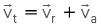 se reduz à igualdade algébrica (escalar)
-
Quando o barco sobe o rio, os vetores têm a disposição ao lado.
Propositadamente, não desenhamos o sentido do vetor  , pois a velocidade em relação às margens pode ser rio acima ou rio abaixo, dependendo de a velocidade do barco em relação às águas ser maior ou menor que a velocidade da correnteza.
, pois a velocidade em relação às margens pode ser rio acima ou rio abaixo, dependendo de a velocidade do barco em relação às águas ser maior ou menor que a velocidade da correnteza.
No eixo adotado, temos:
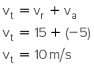
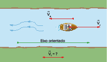
O fato de a velocidade resultar positiva indica que ela tem o mesmo sentido do eixo orientado (rio acima).
O movimento é uniforme, então Δst=vt • Δt. Além disso, temos que 15 min=900 s. Logo:
Δst=10 • 900 ⇒ Δst=9 000 m=9 km.
-
Quando o barco se desloca a favor da correnteza (desce o rio), os vetores têm a disposição abaixo.
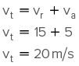
Temos: Δst=vt •
Δt; logo, Δst=20 • 900 ⇒ Δ st=18 000 m=18 km.

Movimento de rotação
O movimento circular se constitui em uma maneira de restringir o movimento a dada região. Ele está presente em vários aparelhos de uso cotidiano. Por exemplo, no motor elétrico de uma furadeira. Como o motor está em movimento se, olhando para a furadeira, a vemos sempre na mesma posição? Podemos pensar também nos casos dos liquidificadores, dos motores dos carros, das rodas, dos ponteiros do relógio, das pás de um ventilador etc.
Nesse sentido, o movimento dos planetas ao redor do Sol também se aproxima bastante de um movimento circular.
A base para o estudo dos movimentos circulares em geral é o movimento circular uniforme (MCU), tanto pela simplicidade das equações como pela clareza dos conceitos iniciais.
Quando um corpo se desloca sobre uma circunferência previamente conhecida, podemos determinar sua posição conhecendo apenas o ângulo central relativo a um arco com origem arbitrária e extremidade na posição considerada. A escolha desse procedimento nos leva a descrever todas as propriedades inerentes a esse movimento por meio de grandezas angulares.
Independentemente da circunferência que escolhemos para aplicar a definição anterior, essa razão resulta sempre em um mesmo número, visto que é uma proporção constante de figuras semelhantes, conforme o esquema.
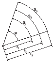
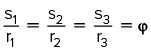
Com relação à unidade radiano, cujo símbolo no Sistema Internacional de Unidades (SI) é rad, vamos observar que:
Embora adimensional, essa unidade é sempre citada após o valor da medida, com a intenção de deixar claro que nos referimos à medida de um ângulo, e não a um número adimensional qualquer. Uma das vantagens práticas de medir um ângulo em radianos é que podemos fazê-lo sem o uso de transferidor, munidos apenas de uma fita métrica flexível. Outro ponto vantajoso é que, sendo adimensional, essa medida não é afetada por eventuais conversões de sistemas de unidades.
O ângulo central de medida 1 rad é aquele que compreende um arco de comprimento igual ao raio da circunferência considerada.
O perímetro de uma circunferência corresponde à medida do arco relativo a uma circunferência completa (uma volta); logo, s=2πr. A medida em radianos desse arco é:

O ângulo raso, que corresponde a meia-volta, vale, portanto, π rad.
A mudança de unidades, de uma medida feita em radianos para a unidade grau, por exemplo, se faz por uma regra de três simples. Lembrando que o ângulo raso compreende 180o, temos:
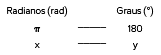
Fase (φ)
É a medida angular algébrica do ângulo que define a posição, considerando-se uma origem arbitrária. Em particular, a fase referente ao instante em que se começa a análise do movimento é chamada de fase inicial (φ0). Geralmente, essa medida é feita em radianos.
Deslocamento angular (Δφ)
É a variação sofrida pela fase em dado intervalo de tempo.
Algebricamente, temos Δφ = φ - φ0, que também é, em geral, medida em radianos.
Essa variação, assim como acontece com o deslocamento escalar, é uma grandeza algébrica. Ou seja, pode ser positiva ou negativa, dependendo de concordar ou não com a orientação adotada.
Velocidade angular média (ωm)
Quando um corpo sofre um deslocamento angular (Δφ) em dado intervalo de tempo (Δt), sua velocidade angular média é, por definição,

cuja unidade no SI é  (radianos por segundo).
(radianos por segundo).
Tal como o deslocamento angular, a velocidade angular também é positiva ou negativa, dependendo de concordar ou não com a orientação da trajetória.
| Sentido do movimento em relação à orientaçãoda trajetória |
| a favor da orientação |
ω > 0 |
| contra a orientação |
ω > 0 |
Velocidade angular instantânea (ω)
Para a definição dos valores instantâneos de uma grandeza, procedemos da mesma forma que no caso da cinemática escalar. Assim:
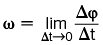
Movimento circular uniforme (MCU)
Um movimento circular é dito uniforme quando sua velocidade angular é uma constante não nula.
Nessa circunstância, é indiferente falarmos em valor médio ou valor instantâneo da velocidade angular, pois ambos coincidem.
A figura ilustra um ponto material que se deslocou da posição P0, correspondente à fase inicial (φ0), para a posição P, correspondente à fase (φ), em MCU.
A partir da definição de velocidade angular, escrevemos:
Considerando o instante inicial (t0=0), obtemos:
φ = φ0 + ωt(função horária do MCU)
A unidade no SI para a frequência é o hertz, definido como 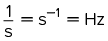.São comuns também as unidades ciclos por segundo (cps) e rotações por minuto (rpm).
Considerando uma volta completa, em MCU, teremos  ; portanto:
; portanto:

Observe que as expressões em destaque somente são válidas quando o ângulo é medido em radianos. Se os ângulos forem medidos em graus, a quantidade 2π rad deve ser substituída por 360o.
Relação entre as grandezas angulares e lineares no MCU
Dado o espaço de um ponto material que executa movimento circular, podemos obter a fase desse ponto material, lembrando que  .A grandeza angular é obtida pela razão entre a grandeza linear e o raio da circunferência descrita. Para o deslocamento angular, escrevemos
.A grandeza angular é obtida pela razão entre a grandeza linear e o raio da circunferência descrita. Para o deslocamento angular, escrevemos  .
.
Com relação à velocidade angular, também vamos observar que  portanto:
portanto:

Aceleração centrípeta
O módulo da aceleração centrípeta é EqnFC6093.png.
Como 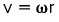, podemos escrever  .
.
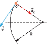
5
Uma criança brinca em um gira-gira que executa movimento circular uniforme de período 3,14 s. A distância da criança ao centro de rotação é 1,5 m, conforme a figura.
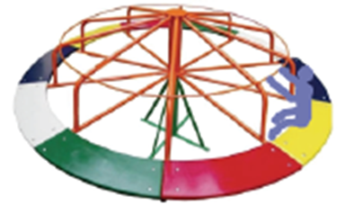
- Qual é a velocidade escalar da criança?
- Qual é o módulo da aceleração desse movimento? Compare-o com o módulo da aceleração da gravidade.
Resolução
-
Como 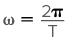, obtemos 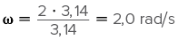.
A velocidade é  .
.
-
A aceleração centrípeta pode ser obtida por:  .
.
Vemos que, mesmo com baixa velocidade, a criança sentirá uma aceleração escalar comparável à da gravidade.
Rolamento
Denominamos rolamento a situação em que um corpo se desloca sobre uma superfície, sem que haja escorregamento entre as superfícies em contato.
A figura a seguir ilustra o rolamento de um pentágono irregular. Em cada trecho do rolamento, um de seus vértices é o centro de rotação.
Composição de rotação e translação
A figura seguinte ilustra alguns polígonos regulares rolando, sem escorregar, sobre uma superfície plana.
Instante por instante, o vértice que está em contato com o solo é o centro da rotação de cada polígono. Como esse vértice não escorrega, a cada instante ele tem velocidade nula em relação ao chão.
e colocarmos um polígono como uma roda em um veículo, à medida que formos aumentando o número de vértices dele, vão diminuindo os solavancos durante o movimento. Quanto mais vértices, mais o polígono fica próximo de um círculo.
Vamos agora analisar o rolamento de um círculo. Quando uma bicicleta desce uma ladeira, sem escorregar, suas rodas estão rolando ladeira abaixo. Todos os pontos de cada uma das rodas dessa bicicleta giram em torno de seus respectivos eixos. Contudo, enquanto os vários pontos da roda giram em torno de seu eixo, esse eixo se desloca em relação ao chão.
Para um observador fixo no solo, vamos identificar cada uma das velocidades integrantes da equação do movimento relativo.
- (velocidade relativa): é a velocidade dos pontos da roda em relação ao eixo.
- (velocidade de arrastamento): é a velocidade do eixo da roda em relação ao solo.
- (velocidade total): é a velocidade dos pontos da roda em relação ao solo.
Esses vetores variam de acordo com o ponto da roda que estejamos considerando.
Em relação ao eixo, os pontos da roda estão em rotação, e nesse referencial cada ponto da periferia da roda tem velocidade de módulo v. O eixo, por sua vez, tem translação em relação ao solo, e sua velocidade de translação (em relação ao solo) também tem módulo v. Em outras palavras, se um automóvel se desloca a 80 km/h em relação à estrada, os eixos das rodas estão se deslocando a 80 km/h em relação ao solo, e cada ponto periférico da roda se desloca com velocidade de 80 km/h em sua rotação em relação ao eixo. As figuras seguintes ilustram a disposição e a composição dos vetores para os pontos A, B, C, D e O da roda.
|
Velocidades em relação ao eixo O ()
|
Velocidade do eixo em relação ao solo ()
|
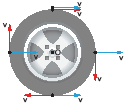
Superposição das velocidades
|
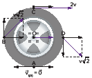
Velocidade total(em relação ao solo).
|
Observe que, em relação ao solo, o ponto A deve ter a mesma velocidade que o solo, pois não há, por hipótese, o escorregamento. Ora, a velocidade do solo, em relação ao próprio solo, é nula. Assim, a composição de velocidades no ponto A deve ser tal que a velocidade desse ponto resulte nula em relação à rodovia; portanto, 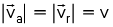. Isso justifica formalmente o fato de a velocidade de arrastamento ser, em módulo, igual à velocidade de um ponto da periferia da roda em relação ao eixo.
6
A figura ilustra uma ferramenta de marcenaria chamada de lixadeira de fita.
Em relação ao eixo O, os pontos da lixa têm velocidade de 30 m/s. Ao tentar lixar uma tábua plana, um artesão deixa escapar a lixadeira, que passa a se mover sobre a tábua sem escorregar. Responda às questões seguintes com base nessa condição.
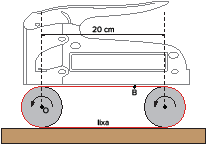
- Após escapar das mãos do artesão, a lixadeira estará lixando?
- Qual é a velocidade dos pontos da fita que estão em contato com a madeira, em relação à tábua?
- Qual é a velocidade do ponto B, na parte superior da lixadeira, em relação à tábua?
- Se a lixadeira percorreu 5 cm, em relação à tábua, até parar, qual foi o deslocamento sofrido pelo ponto B da lixa em relação ao eixo O? E em relação à tábua?
Resolução
- Se não há movimento relativo entre as superfícies em contato, a lixadeira não está esfregando na madeira, logo não está lixando.
- Sem escorregamento, os pontos da fita que estão em contato com a madeira têm, em relação à própria madeira, velocidade nula.
-
Para um observador parado em relação à tábua, a velocidade do ponto B é a velocidade total; a velocidade do eixo em relação à tábua é a velocidade de arrastamento; e a velocidade do ponto da lixa em relação ao eixo é a velocidade relativa. Como  , a composição dos vetores obedece à figura a seguir.
, a composição dos vetores obedece à figura a seguir.
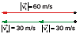
-
Em relação ao eixo, o deslocamento do ponto B também é de 5 cm. Em relação à tábua, podemos escrever:  , cuja composição vetorial vemos abaixo.
, cuja composição vetorial vemos abaixo.
A figura ao lado ilustra as posições do ponto B, vistas por um observador parado em relação à tábua, com destaque também para o ponto A da lixa, que está em contato com a madeira. A marca vermelha na tábua serve para destacar as posições iniciais de cada um dos pontos A, B e C.
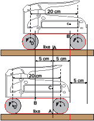
Centro instantâneo de rotação (CIR)
Todos os pontos de um corpo rígido têm a mesma velocidade angular em relação ao eixo de rotação. Vamos lembrar também que as intensidades das velocidades lineares dependem da distância do ponto em relação ao eixo de rotação, pois  , expressão em que r é a distância a que o ponto está desse eixo. Nos esquemas a seguir, o eixo de rotação é visto de cima, representado simplesmente por um ponto.
, expressão em que r é a distância a que o ponto está desse eixo. Nos esquemas a seguir, o eixo de rotação é visto de cima, representado simplesmente por um ponto.
A figura ilustra um sólido qualquer girando em torno do ponto O para determinado observador. O centro de rotação é o ponto que está fixo em relação ao observador, que, portanto, tem velocidade nula.
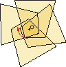
Em algumas situações, o centro instantâneo de rotação pode estar fora do corpo. Nesse caso, ele é o ponto que se comporta como se o corpo estivesse rigidamente ligado a ele e em torno dele girando. Como exemplo, a figura seguinte ilustra um balde, que, por um processo mecânico qualquer, gira em torno do ponto O.
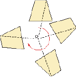
Propriedades do centro instantâneo de rotação (CIR)
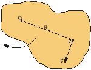
Vejamos algumas propriedades úteis do centro instantâneo de rotação.
- Qualquer ponto do corpo rígido em rotação tem seu vetor velocidade perpendicular à linha que une esse ponto ao CIR.
- A distância entre dois pontos quaisquer desse sólido é sempre a mesma, pois o corpo é rígido. Assim, o vetor velocidade de um ponto do sólido não possui componente de aproximação nem de afastamento em relação a outro ponto do mesmo sólido. Como o CIR tem velocidade nula, a velocidade de qualquer ponto em relação a ele é a própria velocidade total, e esta é perpendicular à linha que une o ponto do CIR.
- A posição do CIR depende do referencial considerado.
Como exemplo, vamos retomar o já visto caso de rolamento de um cilindro: em relação ao carro, o CIR é o próprio eixo da roda; em relação ao solo, o CIR é o ponto da roda que está em contato com o solo.

Em relação ao carro, o CIR da roda é o próprio eixo.
|

Em relação à pista, o CIR da roda é o ponto de contato com o solo.
|
Podemos obter as velocidades vetoriais dos pontos A, B, C e D da roda que está rolando usando as propriedades do CIR com a relação v = ωR, tomando o cuidado de observar que R representa a distância do ponto do qual se quer obter a velocidade em relação ao CIR.
De acordo com a figura, observamos as seguintes relações para um referencial fixo no solo:

7
Uma escada de 5 m de comprimento escorrega pela parede, conforme indica a figura. Em dado instante, o ponto A da escada, que está em contato com a parede, tem velocidade 20 m/s e está a 3,0 m do nível do piso. Nesse instante, qual é a velocidade do ponto B?
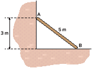
Resolução
O vetor velocidade de cada ponto de um corpo rígido em rotação é perpendicular ao segmento que une esse ponto ao CIR.As direções dos vetores velocidades dos pontos A e B da escada são determinadas pelos apoios (parede e chão). Traçando perpendiculares a essas direções, obtemos o CIR, conforme ilustra a figura.
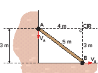
Considerando o triângulo retângulo ABC, temos:
Em relação ao CIR, temos v = ωR, logo:
Em relação ao CIR, temos v = ωR, logo:
Ponto A: 20 = ω • 4
Ponto B: vB = ω • 3
Assim, 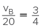 ⇒ vB=15 m/s.

Aplicando conhecimentos
1
Um homem, em seu barco a remo, consegue trafegar em um lago à velocidade máxima de 6 m/s. Caso ele fosse com seu barco para um rio cujas águas possuem velocidade de 4 m/s, qual seria a maior velocidade possível para esse homem:
- descendo o rio?
- subindo o rio?
2
Fuvest-SP Dois carros, A e B, movem-se no mesmo sentido, em uma estrada reta, com velocidades constantes vA=100 km/h e vB=80 km/h, respectivamente.
- Qual é, em módulo, a velocidade do carro B em relação a um observador no carro A?
- Em um dado instante, o carro B está 600 m à frente do carro A. Quanto tempo, em horas, decorre até que A alcance B?
3
Um barco sobe um rio a 3 km/h e desce a 7 km/h, ambas as velocidades em relação às margens, com o motor funcionando com a mesma potência. Qual é a velocidade das águas desse rio em relação às margens?
4
Uma balsa retangular, medindo 5 m de largura e 20 m de comprimento, desce um trecho retilíneo de um rio com velocidade 20 km/h em relação às margens. Um homem, partindo do ponto A, corre à beira da balsa a 5 km/h em sentido anti-horário e dá uma volta completa. Faça uso da malha quadriculada para facilitar o desenho da trajetória no item B.
- Qual é a trajetória do homem, considerando a balsa como referencial?
- Qual é a trajetória do homem, considerando as margens do rio como referencial?
5
Um carro movimenta-se em uma estrada retilínea com velocidade 40 km/h em relação ao solo no momento em que cai uma chuva vertical. Por causa da resistência do ar, no instante em que está nas proximidades da superfície, a água possui velocidade constante de 40 km/h em relação ao solo. Determine:
- a velocidade da chuva em relação ao carro;
- o ângulo formado entre a velocidade da chuva em relação ao carro e ao plano horizontal.
6
UEMG 2015 O tempo é um rio que corre. O tempo não é um relógio. Ele é muito mais do que isso. O tempo passa, quer se tenha um relógio ou não.
- Se a correnteza não existisse, o barco levaria 25 s para atravessar o rio. Com a correnteza, o barco levaria mais do que 25 s na travessia.
- Como a velocidade do barco é perpendicular às margens, a correnteza não afeta o tempo de travessia.
- O tempo de travessia, em nenhuma situação, seria afetado pela correnteza.
- Com a correnteza, o tempo de travessia do barco seria menor que 25 s, pois a correnteza aumenta vetorialmente a velocidade do barco.
7
Acafe-SC Um carrinho de brinquedo descreve um círculo, no sentido anti-horário, com velocidade de módulo constante.
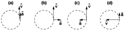
A figura que representa corretamente os vetores velocidade e aceleração é a:
- Figura (c)
- Figura (b)
- Figura (a)
- Figura (d)
8
Famerp-SP Em julho de 2020, Estados Unidos, China e Emirados Árabes lançaram missões espaciais não tripuladas a Marte.
- Para chegar ao planeta, as naves devem percorrer uma distância aproximada de 4,80 X 108 km em cerca de 200 dias terrestres. Quantas horas demorará a viagem das naves da Terra até Marte? Qual é a velocidade média, em km/h, desenvolvida pelas naves nessa viagem?
- O período de translação de Marte em torno do Sol é de 1,9 anos terrestres. Considerando as órbitas no mesmo plano e aproximadamente circulares, e que os planetas se movem no mesmo sentido com velocidades angulares constantes, calcule o menor intervalo de tempo, em meses terrestres, entre dois instantes de máxima aproximação entre Marte e Terra.
9
Um ciclista desloca-se sobre uma balsa com velocidade 10 km/h em relação a ela. Já a balsa desce o rio com velocidade 15 km/h em relação às águas, que, por sua vez, se movimentam com velocidade 5 km/h em relação às margens. Os trajetos são retilíneos e as três velocidades citadas possuem mesma direção e mesmo sentido. Determine para dado instante as seguintes velocidades:
- da balsa em relação às margens;
- do ciclista em relação às margens;
- de um ponto da roda no instante em que está em contato com a balsa em relação às margens;
- de um ponto no instante em que ele está na posição mais alta da roda em relação às margens.
10
Fuvest-SP Um cilindro de madeira de 4,0 cm de diâmetro rola sem deslizar entre duas tábuas horizontais móveis, A e B, como representa a figura. Em determinado instante, a tábua A se movimenta para a direita com velocidade de 40 cm/s e o centro do cilindro se move para a esquerda com velocidade de intensidade 10 cm/s. Qual é nesse instante a velocidade da tábua B em módulo e sentido?

Consolidando saberes
Considere que a velocidade da correnteza é a mesma em todos os pontos do rio. Nesse caso, para alcançar a segunda boia, o menino deve nadar na direção indicada pela linha:
- K
- L
- M
- N
2
Num vagão ferroviário que se move com velocidade v0=3 m/s em relação aos trilhos, estão dois meninos A e B que correm um em direção ao outro, cada um com velocidade v=3 m/s em relação ao vagão. As velocidades dos meninos A e B em relação aos trilhos serão respectivamente de:
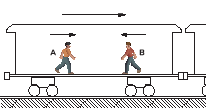
Considere que a velocidade da correnteza é a mesma em todos os pontos do rio. Nesse caso, para alcançar a segunda boia, o menino deve nadar na direção indicada pela linha:
- 6 m/s e 0 m/s
- 3 m/s e 3 m/s
- 0 m/s e 9 m/s
- 9 m/s e 0 m/s
- 0 m/s e 6 m/s
3
Um homem rema um barco com velocidade de 5,00 km/h na ausência de correnteza. Quanto tempo ele gasta para remar 3,00 km rio abaixo e voltar ao ponto de partida em um dia em que a velocidade da correnteza é de 1,00 km/h? Suponha que a potência de suas remadas seja a mesma nos dois casos e que o trajeto seja retilíneo.
Considere que a velocidade da correnteza é a mesma em todos os pontos do rio. Nesse caso, para alcançar a segunda boia, o menino deve nadar na direção indicada pela linha:
- 1,25 h
- 1,20 h
- 1,15 h
- 1,10 h
- 1,00 h
4
FEI-SP Um barco se move com velocidade constante de 10 m/s em relação à água, num local onde a correnteza tem velocidade constante de 2 m/s, a favor do barco. Num determinado momento, um dos ocupantes desse barco deixa cair uma garrafa e só dá pela sua falta 5 minutos mais tarde. Imediatamente, joga âncora e resolve esperar que a própria correnteza lhe traga a garrafa. No instante em que o barco para, pode-se afirmar que a distância da garrafa ao barco e o tempo gasto pela correnteza para trazê-la são, respectivamente:
- 3 000 m, 25 minutos
- 3 000 m, 10 minutos
- 3 000 m, 20 minutos
- 2 400 m, 20 minutos
- 2 400 m, 12 minutos
5
Um trem se desloca em plano horizontal em trilhos retilíneos com velocidade constante de módulo 3,0 m/s em relação ao solo. Uma pessoa está caminhando sobre o teto do vagão com velocidade relativa ao vagão constante e de módulo 4,0 m/s.
Na figura, temos uma vista do teto do vagão, que tem velocidade  na direção e no sentido do eixo (Ox).
na direção e no sentido do eixo (Ox).
Calcule o módulo da velocidade da pessoa, em relação ao solo, nos seguintes casos:
- a pessoa se movimenta na direção e no sentido do eixo (Ox);
- a pessoa se movimenta na direção e no sentido do eixo (Oy).
6
Mackenzie Olimpíadas de Inverno de Pyeongchang.
No mês de fevereiro do vigente ano, do dia 7 ao dia 25, na cidade de Pyeongchang na Coreia do Sul, o mundo acompanhou a disputa de 2.952 atletas, disputando 102 provas de 15 disciplinas esportivas na 23a edição dos Jogos Olímpicos de Inverno.
Praticamente todas as provas ocorreram sob temperaturas negativas, dentre elas, a belíssima patinação artística no gelo, que envolve um par de atletas.
A foto acima mostra o italiano Ondrej Hotarek que, em meio à coreografia da prova, crava a ponta de um de seus patins em um ponto e gira a colega Valentina Marchei, cuja ponta de um dos patins desenha no gelo uma circunferência de raio 2,0 metros. Supondo-se que a velocidade angular de Valentina seja constante e valha 6,2 rad/s e considerando-se π ≅ 3,1, pode-se afirmar corretamente que o módulo da velocidade vetorial média da ponta dos patins de Valentina, ao percorrer de um ponto a outro diametralmente oposto da circunferência, vale, em m/s,
- 2,0
- 3,0
- 5,0
- 6,0
- 8,0
7
Vunesp Um homem, em pé sobre uma plataforma que se move horizontalmente para a direita com velocidade constante v=4,0 m/s, observa que, ao inclinar de 45o um tubo cilíndrico oco, permite que uma gota de chuva, que cai verticalmente com velocidade c constante em relação ao solo, atravesse o tubo sem tocar em suas paredes. Determine a velocidade c da gota da chuva, em m/s.
8
Vunesp (Adapt.) Gotas de chuva que caem com velocidade v=20 m/s são vistas através da minha vidraça formando um ângulo de 30° com a vertical, vindo da esquerda para a direita. Quatro automóveis estão passando pela minha rua com as velocidades de módulos e sentidos indicados. Qual dos motoristas vê, através do vidro lateral, a chuva caindo na vertical?
- 1
- 2
- 3
- 4
- Nenhum deles vê a chuva na vertical.
9
Um avião voa com velocidade v=300 km/h constante de norte para o sul. Em dado momento ele entra em uma região onde o vento sopra com velocidade v=150 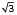km/h de leste para oeste. Qual deverá ser o ângulo de correção de rota com a direção norte-sul que o avião deverá fazer para chegar a uma cidade situada a 200 km ao sul do ponto de partida?
- 15°
- 30°
- 45°
- 60°
- 75°
10
FMP 2021 O lançamento de martelo é uma modalidade olímpica de atletismo na qual o atleta gira uma esfera de metal presa por um cabo e a solta, visando a que a esfera atinja a maior distância possível após o lançamento, conforme mostra a Figura abaixo.
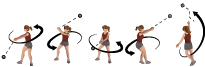
Suponha que, no momento do lançamento, a esfera realizava um movimento circular de raio 1,20 m, girando a uma velocidade angular de 25,0 rad/s. A velocidade da esfera no momento do lançamento, em m/s, é de, aproximadamente,
- 30,0
- 26,2
- 36,0
- 25,0
- 20,8
11
UEM-PR Em um plano, uma partícula P1 parte do ponto (1, 0) no instante t0 = 0 s e se desloca no sentido anti-horário sobre o gráfico da circunferência Γ de equação x2 + y2 = 1 até retornar ao ponto de partida. No mesmo instante t0 = 0 s, uma outra partícula, P2, parte do ponto (-1, 1) e se desloca sobre o gráfico da função y = x2 até o ponto (1, 1).
Suponha que as distâncias sejam dadas em metros e que as velocidades escalares de ambas as partículas sejam iguais e constantes.
Assinale o que for correto.
- 01. A partícula P2 percorre apenas pontos interiores à circunferência Γ.
- 02. Se a velocidade escalar das partículas for de 3 m/s, então o tempo que a partícula P1 leva para retornar ao ponto de partida é superior a 2 s.
- 04. Durante os deslocamentos das partículas, entre quaisquer dois instantes t1 e t2 a velocidade vetorial média de P1 é igual à velocidade vetorial média de P2.
- 08. A aceleração vetorial instantânea de P1 em qualquer instante t do deslocamento é igual à aceleração centrípeta em t.
- 16. No movimento da partícula P2 não há aceleração centrípeta.
Soma:
12
Fuvest-SP Em uma estrada, dois carros, A e B, entram simultaneamente em curvas paralelas, com raios RA e RB. Os velocímetros de ambos os carros indicam, ao longo de todo o trecho curvo, valores constantes VA e VB.
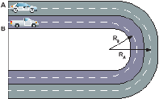
Se os carros saem das curvas ao mesmo tempo, a relação entre VA e VB é
- VA=VB
- VA/VB=RA/RB
- VA/VB=(RA/RB)2
- VA/VB=RB/RA
- VA/VB=(RB/RA)2
13
Unicamp-SP (Adapt.) O quadro (a), a seguir, refere-se à imagem de televisão de um carro parado, em que podemos distinguir claramente a marca do pneu (“PNU”). Quando o carro está em movimento, a imagem da marca aparece como um borrão em volta de toda a roda, como ilustrado em (b).

A marca do pneu volta a ser nítida, mesmo com o carro em movimento, quando este atinge uma determinada velocidade. Essa ilusão de movimento na imagem gravada é devido à frequência de gravação de 30 quadros por segundo (30 Hz). Considerando que o diâmetro do pneu é igual a 0,6 m e π = 3,0, responda:
- Quantas voltas o pneu completa em um segundo, quando a marca filmada pela câmara aparece parada na imagem, mesmo estando o carro em movimento?
- Qual a menor frequência angular ω do pneu em movimento, quando a marca aparece parada?
- Qual a menor velocidade linear (em m/s) que o carro pode ter na figura (c) em relação ao solo?
14
Uma pequena pedra fica presa ao pneu de caminhão de 1 m de diâmetro. A partir do instante em que a pedra está em contato com o solo, o pneu dá meia-volta sobre seu eixo. Nesse intervalo, determine:
- o deslocamento da pedra em relação ao eixo;
- o deslocamento do eixo em relação ao solo;
- o deslocamento da pedra em relação ao solo.
15
Um trator utiliza duas esteiras. Cada esteira tem 1 m reto na parte de cima, 1 m reto na parte que fica em contato com o solo e 1 m em cada parte curva, totalizando 4 m.
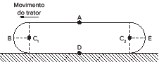
O trator está em movimento retilíneo e uniforme com velocidade de intensidade 18 km/h.
Pedem-se:
- as intensidades das velocidades dos pontos A, B, D e E;
- o intervalo de tempo em que cada ponto da esteira permanece em contato com o solo.
16
Uece Considere uma pedra em queda livre e uma criança em um carrossel que gira em velocidade angular constante. Sobre o movimento da pedra e da criança, é correto afirmar que:
- aceleração da pedra varia e a criança gira em aceleração nula.
- a pedra cai em aceleração nula, e a criança gira em aceleração constante.
- ambas sofrem aceleração de módulos constantes.
- a aceleração de ambas é zero.
17
Enem digital No Autódromo de Interlagos, um carro de Fórmula 1 realiza a curva S do Senna numa trajetória curvilínea. Enquanto percorre esse trecho, o velocímetro do carro indica velocidade constante. Quais são a direção e o sentido da aceleração do carro?
- Radial, apontada para dentro da curva.la.
- Aceleração nula, portanto, sem direção nem sentido.ação constante.
- Tangencial, apontada no sentido da velocidade do carro.
- Tangencial, apontada no sentido contrário à velocidade do carro.
- Tangencial, apontada no sentido contrário à velocidade do carro.
Uma criança cola uma bola de massa epóxi entre o pneu e a roda metálica do carro do pai. Ao entrar em uma estrada, quando o velocímetro digital do carro indica 108 km/h, a bola se desprende e é arremessada. A bola se desprendeu exatamente no momento registrado na figura a seguir, em que o ponto A é ponto de contato do pneu com a estrada; o ponto C, o centro da roda; o ponto B, o ponto externo da roda pertencente ao raio, sobre o qual foi colada a bola de epóxi.
Nessa situação, determine a velocidade, em m/s e km/h, com que a bola se desprendeu. Indique módulo, direção e sentido.
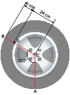

No enem é assim
As questões selecionadas nesta seção são prioritariamente do Enem, mas questões de vestibulares diversos que apresentam características semelhantes aos itens do referido exame também podem ser usadas como recurso para estudo.
1
Enem Em apresentações musicais realizadas em espaços onde o público fica longe do palco, é necessária a instalação de alto-falantes adicionais a grandes distâncias, além daqueles localizados no palco. Como a velocidade com que o som se propaga no ar(vsom = 3,4 X 102 m/s) é muito menor do que a velocida-de com que o sinal elétrico se propaga nos cabos(vsinal = 2,6 X 108 m/s), é necessário atrasar o sinal elétrico de modo que este chegue pelo cabo ao alto-falante no mesmo instante em que o som vindo do palco chega pelo ar. Para tentar contornar esse problema, um técnico de som pensou em simplesmente instalar um cabo elétrico com comprimento suficiente para o sinal elétrico chegar ao mesmo tempo que o som, em um alto-falante que está a uma distância de 680 metros do palco. A solução é inviável, pois seria necessário um cabo elétrico de comprimento mais próximo de
- 1,1 X 103 km.
- 8,9 X 104 km.
- 1,3 X 105 km.
- 5,2 X 105 km.
- 6,0 X 1013 km.
2
FGV Comandada com velocidade constante de 0,4 m/s, a procissão iniciada no ponto indicado da Praça Santa Madalena segue com o Santo sobre o andor por toda a extensão da Av. Vanderli Diagramatelli.
Para garantir a segurança dos devotos, a companhia de trânsito somente liberará o trânsito de uma via adjacente, assim que a última pessoa que segue pela procissão atravesse completamente a via em questão.
Dados: A Av. Vanderli Diagramatelli se estende por mais de oito quarteirões e, devido à distribuição uniforme dos devotos sobre ela, o comprimento total da procissão é sempre 240 m.
Todos os quarteirões são quadrados e têm áreas de 10 000 m2.
A largura de todas as ruas que atravessam a Av. Vanderli Diagramatelli é de 10 m.
Do momento em que a procissão teve seu início até o instante em que será liberado o trânsito pela Av. Geralda Boapessoa, decorrerá um intervalo de tempo, em minutos, igual a:
- 6.
- 8.
- 10.
- 12.
- 15.
3
UFSC (Adapt.) Um ratinho afasta-se de sua toca em busca de alimento, percorrendo uma trajetória retilínea. No instante t = 11 s, um gato pula sobre o caminho do ratinho e ambos disparam a correr: o ratinho retornando sobre a mesma trajetória em busca da segurança da toca e o gato atrás do ratinho. O gráfico da figura representa as posições do ratinho e do gato, em função do tempo, considerando que no instante t = 0, o ratinho partiu da posição d = 0, isto é, da sua toca.
Assinale a(s) proposição(ões) CORRETA(S) sobre o movimento do ratinho e do gato:
Dados: A Av. Vanderli Diagramatelli se estende por mais de oito quarteirões e, devido à distribuição uniforme dos devotos sobre ela, o comprimento total da procissão é sempre 240 m.
Todos os quarteirões são quadrados e têm áreas de 10 000 m2.
A largura de todas as ruas que atravessam a Av. Vanderli Diagramatelli é de 10 m.
Do momento em que a procissão teve seu início até o instante em que será liberado o trânsito pela Av. Geralda Boapessoa, decorrerá um intervalo de tempo, em minutos, igual a:
- 01
. O ratinho chega 1,0 segundo antes do gato que, portanto, não consegue alcançá-lo.
- 02
. O ratinho deslocou-se com velocidade constante entre os instantes t = 5,0 s e t = 7,0 s.
- 04
. O movimento do ratinho foi sempre retilíneo e uniforme, tanto na ida como na volta.
- 08
. O gato encontrava-se a 5,0 metros do ratinho quando começou a persegui-lo.
- 16
. O ratinho parou duas vezes no seu trajeto de ida e de volta até a toca.
- 32
. O gato percorre uma distância maior que a do ratinho, em menor tempo, por isso alcança-o antes que ele possa chegar à toca.
Soma:
4
Cefet-MG 2014 A situação em que o módulo da aceleração média será maior está descrita em:
- “Na Terra, uma pedra arremessada para cima encontra-se no ponto mais alto de sua trajetória.”
- “Um corredor velocista realiza a prova dos 100 m rasos alcançando a partir do repouso a velocidade de 11 m/s em 5 s.”
- “Um automóvel em movimento tem sua velocidade de 16 m/s reduzida a zero em 4 s diante de um sinal vermelho.”
- “Um avião, ao pousar, toca a pista de aterrissagem com uma velocidade inicial de 70 m/s, levando 14 s para alcançar o repouso.”
5
Unesp Um corpo parte do repouso em movimento uniformemente acelerado. Sua posição em função do tempo é registrada em uma fita a cada segundo, a partir do primeiro ponto à esquerda, que corresponde ao instante do início do movimento. A fita que melhor representa esse movimento é:
6
Enem 2017 Um motorista que atende a uma chamada de celular é levado à desatenção, aumentando a possibilidade de acidentes ocorrerem em razão do aumento de seu tempo de reação. Considere dois motoristas, o primeiro atento e o segundo utilizando o celular enquanto dirige. Eles aceleram seus carros inicialmente a 1,00 m/s2. Em resposta a uma emergência, freiam com uma desaceleração igual a 5,00 m/s2. O motorista atento aciona o freio à velocidade de 14,0 m/s, enquanto o desatento, em situação análoga, leva 1,00 segundo a mais para iniciar a frenagem.
Que distância o motorista desatento percorre a mais do que o motorista atento, até a parada total dos carros?
- 2,90 m
- 14,0 m
- 14,5 m
- 15,0 m
- 17,4 m
Os semáforos estão separados por uma distância de 500 m. Segundos os dados estatísticos da companhia controladora de trânsito, um veículo, que está inicialmente parado no semáforo O, tipicamente parte com aceleração constante de 1 m s-2 até atingir a velocidade de 72 km h-1 e, a partir daí, prossegue com velocidade constante. Você deve ajustar os semáforos A, B e C de modo que eles mudem para a cor verde quando o veículo estiver a 100 m de cruzá-los, para que ele não tenha que reduzir a velocidade em nenhum momento.
Considerando essas condições, aproximadamente quanto tempo depois da abertura do semáforo O os semáforos A, B e C devem abrir, respectivamente?
- 20 s, 45 s e 70 s.
- 25 s, 50 s e 75 s.
- 28 s, 42 s e 53 s.
- 30 s, 55 s e 80 s.
- 35 s, 60 s e 85 s.
8
UFSM-RS Um carro se desloca com velocidade constante num referencial fixo no solo. O motorista percebe que o sinal está vermelho e faz o carro parar. O tempo de reação do motorista é de frações de segundo. Tempo de reação é o tempo decorrido entre o instante em que o motorista vê o sinal vermelho e o instante em que ele aplica os freios. Está associado ao tempo que o cérebro leva para processar as informações e ao tempo que levam os impulsos nervosos para percorrer as células nervosas que conectam o cérebro aos membros do corpo. Considere que o carro adquire uma aceleração negativa constante até parar. O gráfico que pode representar o módulo da velocidade do carro (v) em função do tempo (t), desde o instante em que o motorista percebe que o sinal está vermelho até o instante em que o carro atinge o repouso, é
 .
.


 ⇒
⇒  .A direção e o sentido estão indicados no diagrama efetuado com os próprios vetores.
.A direção e o sentido estão indicados no diagrama efetuado com os próprios vetores. =
=  +
+ 
 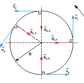
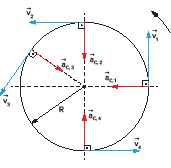